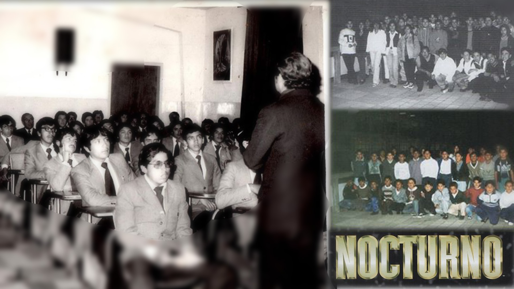
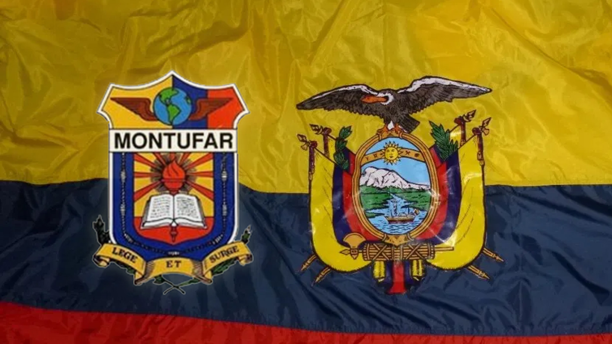

LA INSTITUCIÓN
El Colegio Nacional Juan Pío Montúfar fue creado durante el Gobierno del Presidente Carlos Arroyo del Río,1 mediante decreto N.º 1.551 del 26 de diciembre de 1941,2 e inaugurado el 20 de octubre de 1942, siendo Ministro de Educación el señor Abelardo Montalvo. Su primer rector fue el pedagogo e investigador Óscar Efrén Reyes, desde 1942 a 1944.3 Sin embargo, el rector desde su fundación hasta antes de su inauguración fue el Doctor Luis Ángel Barberis Jaramillo, quien contribuyó a cimentar las bases físicas y administrativas del plantel.
El colegio fue designado como Juan Pío Montúfar, Marqués de Selva Alegre, en homenaje al presidente de la Primera Junta de Gobierno Autónoma de Quito proclamada el 10 de agosto de 1809. El primer local del colegio Montúfar fue el edificio ubicado entre la calle Borrero N.º 227 y Maldonado, en el centro de Quito, dónde funcionó por veinte años, siendo ampliado mediante la compra de las casas colindantes del sector, llegando a ocupar hacia 1960 toda la manzana comprendida entre las calles Maldonado, Borrero, Loja y Quijano. Mediante Decreto N.º 555 del 15 de septiembre de 1950, se autorizó el funcionamiento de la sección nocturna (mixta) que pretendía brindar una educación laica y moderna a adultos trabajadores que no habían concluido sus estudios secundarios, siendo el segundo plantel fundado en la ciudad de Quito para brindar este tipo de educación. El 19 de junio de 1964, el colegio se reubicó en la Avenida Napo (sector Chimbacalle) al sur de la ciudad de Quito. Las obras iniciaron el 20 de mayo de 1960 por gestiones del rector Oswaldo Custode, quien contó con el apoyo de los gobiernos de ese entonces, encabezados por los presidentes Camilo Ponce Enríquez y Velasco Ibarra 4. En 1985 la institución asumió la categoría de Colegio Experimental.2
La institución contaba en 2015 con 2971 alumnos en la jornada matutina y 1090 en la vespertina. Al ser un colegio de educación secundaria acoge a estudiantes de los últimos tres años de educación general básica (EGB) y los tres del Bachillerato General Unificado (BGU). Desde la aplicación del BGU se abandonaron las distintas mallas curriculares de especialidades para ajustarse a los requerimientos del Ministerio de Educación, por lo que la última promoción en graduarse con el título de bachiller en las distintas especialidades antes existentes (Físico-Matemático, Químico-Biólogo y Ciencias Sociales) fue la promoción 2012-2013.5 Desde el ciclo 2012-2013, el colegio dejó su carácter exclusivamente masculino desde el 8º año de educación básica (225 estudiantes).6. En 2014, durante la presidencia de Rafael Correa, el Ministerio de Educación crea la Unidad Educativa Réplica Montúfar, en la parroquia de Pomasqui, al norte de Quito, dentro del plan de replicar a los colegios fiscales más prestigiosos en otros sectores de la capital ecuatoriana.7En 2015, el colegio se suma también al programa de remodelación integral de instituciones educativas "Manos a la Obra", que impulsado también por el Gobierno Nacional de ese entonces, se propuso convertir a los establecimiento educativos emblemáticos en unidades educaticas del milenio.8
Desde el año lectivo 2018 - 2019, la Institución Educativa Fiscal Juan Pío Montúfar pasa a denominarse Unidad Educativa Fiscal Juan Pío Montúfar, pues el ala norte del plantel que hasta años anteriores albergaba a una sección de laboratorios, aulas prefabricadas y un complejo deportivo para los docentes de la institución, es remodelada y adecuada para recibir a cerca de 2800 alumnos de educación primaria (básica inferior) que antes recibían instrucción educativa en las Escuelas Fiscales República de Brasil y República de Argentina según publicación de Diario Últimas Noticias en su edición impresa del jueves 29 de agosto de 2019.